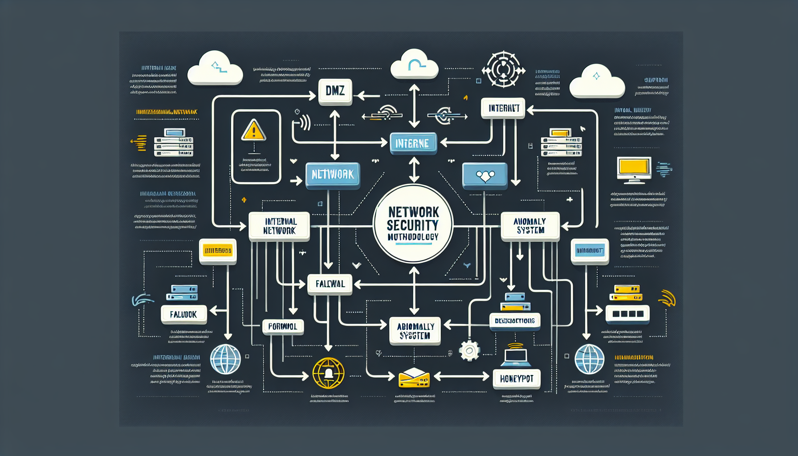

김기현의 포트폴리오


중부대 정보보호학과 / 클라우드 보안
설명: 클라우드 환경에서의 보안의 기본이 되는 방화벽 설정 프로젝트입니다. AWS Security Groups, Azure Network Security Groups(NSG) 등을 사용하여 네트워크 트래픽 규칙을 설정하고 무단 접근을 방지하는 방법을 학습합니다.
핵심 기술: AWS Security Groups, Azure NSG, 클라우드 네트워크 트래픽 분석
설명:클라우드 환경에서의 네트워크 트래픽을 모니터링하고 분석하는 프로젝트입니다. AWS VPC Flow Logs, Azure Network Watcher, GCP VPC Flow Logs와 같은 클라우드 네이티브 도구를 활용해 트래픽 데이터를 수집하고, 보안 위협을 탐지하는 방법을 학습합니다.
핵심 기술: 클라우드 네트워크 트래픽 로깅(AWS, Azure, GCP), TCP/IP 프로토콜, 클라우드 트래픽 분석
설명: 클라우드 환경에서 침입을 탐지하는 시스템을 구축하는 프로젝트입니다. AWS GuardDuty, Azure Sentinel, GCP Cloud IDS와 같은 클라우드 보안 서비스를 활용해 보안 위협을 모니터링하고 탐지하는 방법을 학습합니다.
핵심 기술: AWS GuardDuty, Azure Sentinel, GCP Cloud IDS, 클라우드 네트워크 모니터링, 침입 탐지.
설명: Wireshark를 활용한 네트워크 패킷 분석 보고서
핵심 기술: Wireshark, TCP/IP 프로토콜 분석
클라우드 보안 엔지니어는 클라우드 환경의 데이터와 시스템을 보호하며, 사이버 공격과 데이터 유출 등의 위협으로부터 클라우드 인프라를 안전하게 유지하는 전문가입니다. 클라우드 보안 설정, 네트워크 및 애플리케이션 보안 강화, 데이터 암호화, 보안 사고 대응을 담당하며, 취약점 분석과 보안 정책 수립을 통해 기업의 클라우드 자산을 안전하게 보호합니다.
클라우드 보안 엔지니어로 성장하기 위해 아래와 같은 내용을 추가적으로 학습할 계획입니다:
클라우드 보안 전문가로 성장하기 위해 다음과 같은 자격증을 순차적으로 취득할 계획입니다: